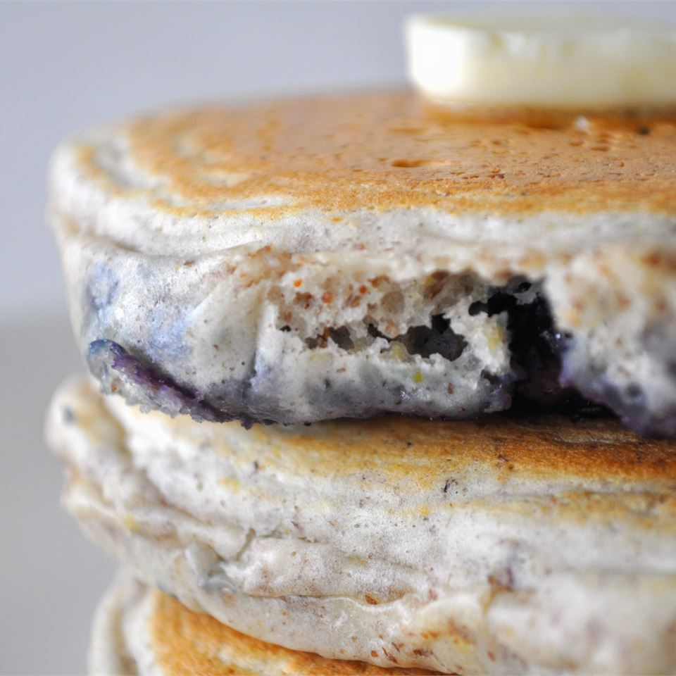

Blueberry Flax Pancakes Recipe

Description
These delicious, healthy pancakes contain blueberries for a perfect taste and ground flax seeds for fiber.
Ingredients
- 1.5 cups of pancake mix
- 0.5 cups of flax seeds
- 1 cup of skim milk
- 2 eggs
- 1 cup of blueblerries
Steps
- Place a skillet over medium heat.
- Stir the pancake mix and flax seeds together in a medium-sized bowl.
- Whisk together the milk and eggs in a separate bowl.
- Mix the wet ingredients into the pancake and flax seed bowl.
- Pour a fourth of a cup of batter onto the skillet, and sprinkle the pancake with blueberries.
- Flip the pancake once bubbles appear, and remove when browned on both sides.
Return to Odin Recipes Homepage